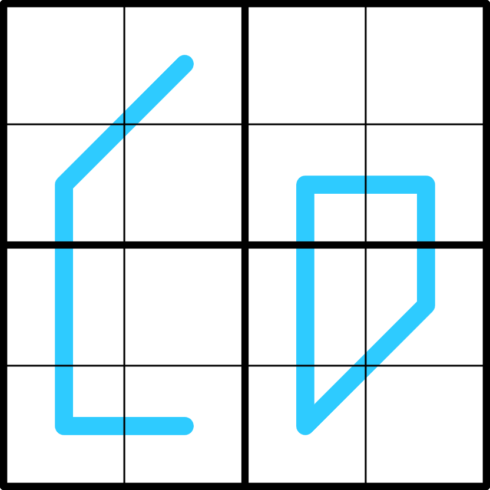

Microregio - ⭐️

LINK
REGELS:
- Standaard sudoku: Plaats de cijfers van 1 t/m 4 eenmaal in elke rij, kolom, en 2x2 blok.
- Region sum line: De grenzen van de 2x2 blokken splitsen blauwe lijnen in segmenten. De som van de cijfers van elk segment op een blauwe lijn is gelijk.